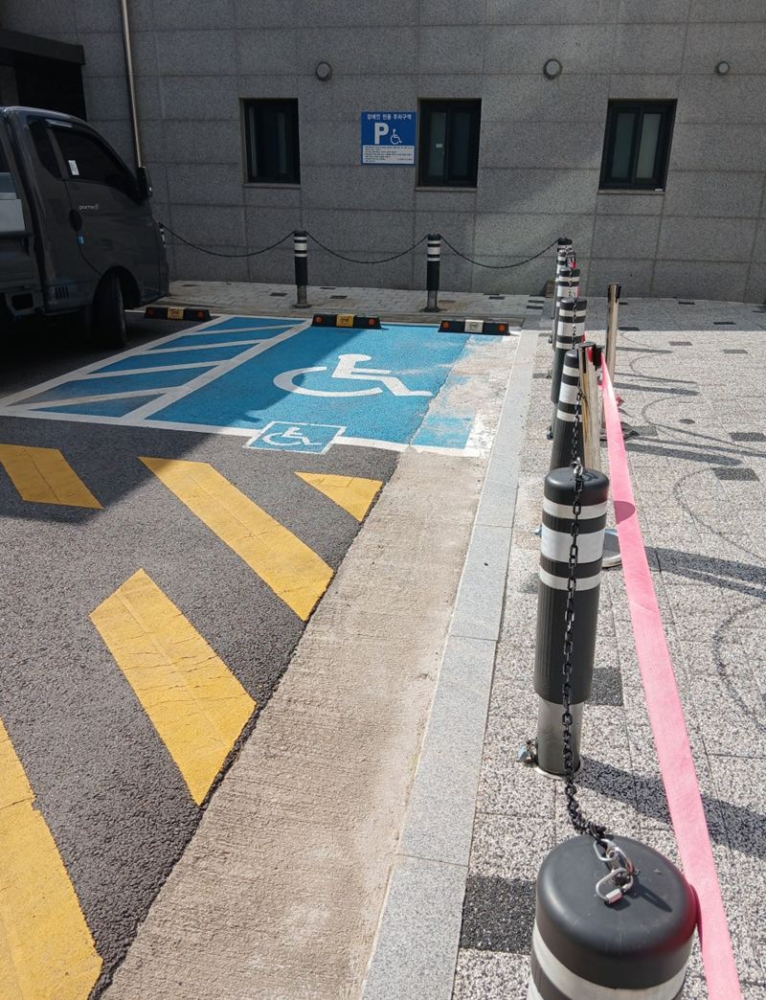
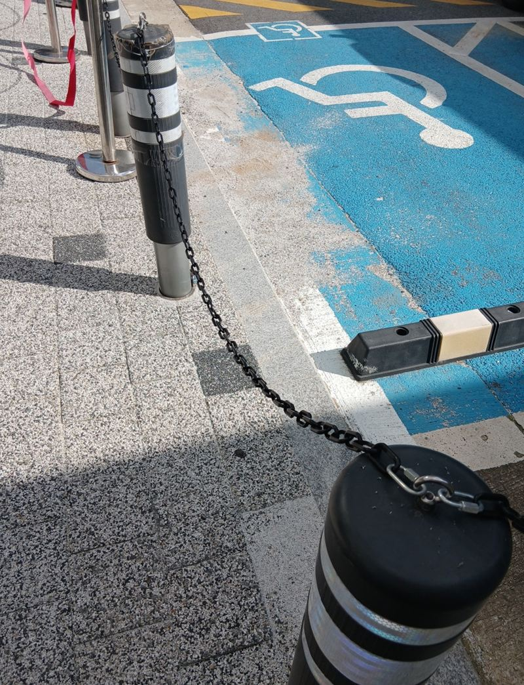
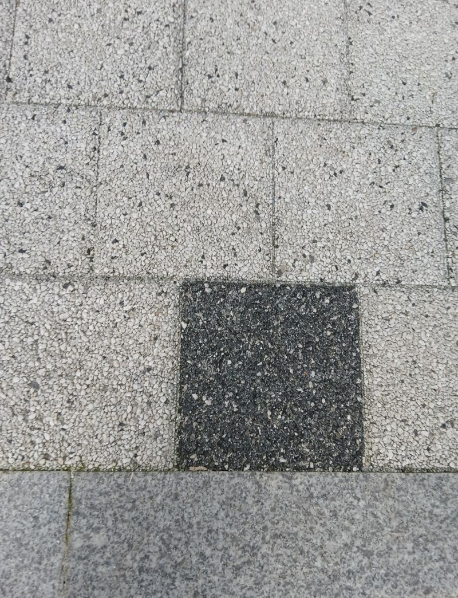
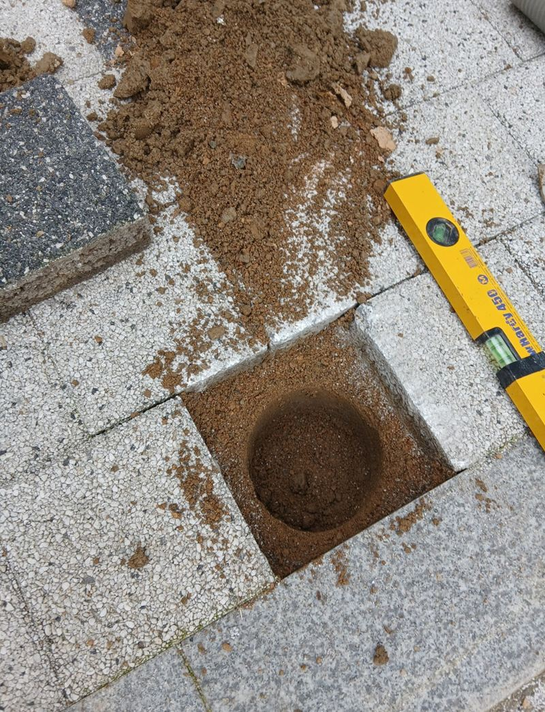
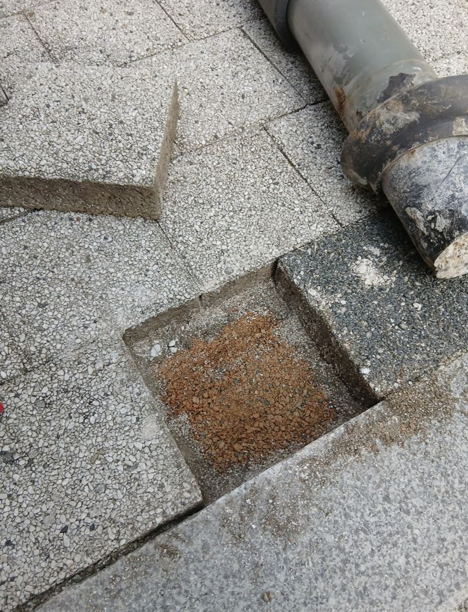
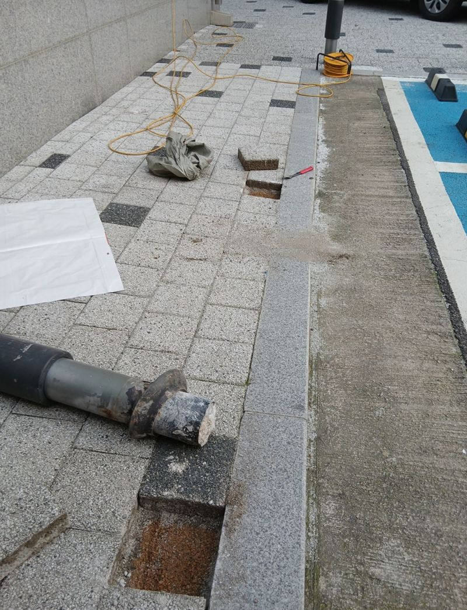
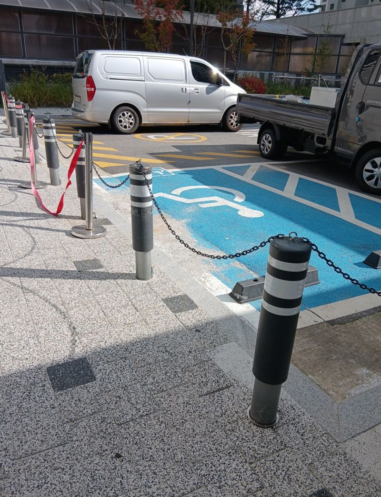

평택 일자형 볼라드 고리 연결로 출입 막는 방법


이전 전이전 후← 밀어서 전후 비교 →
"쓰던 볼라드를 다른 출입구로 옮기고, 차가 못 들어오게 고리도 이어 주세요." 평택 고덕동 아파트 단지였어요. 안쪽 도로에 있던 탄성 볼라드가 필요 없는 자리에 서 있었고, 차가 드나들어 곤란한 출입구가 따로 있었어요. 새로 사지 않고 옮겨 쓰고 싶어 하셨어요. 보도블럭이 깨지지 않게 기존 볼라드를 잘라 빼내고, 새 자리에 몰탈로 다시 묻은 뒤 기둥마다 고리를 달아 체인으로 이었어요.
| 현장 | 평택 고덕동 아파트 단지 안 도로·출입구 |
|---|---|
| 요청 | 기존 볼라드를 다른 출입구로 이전, 고리 연결로 차량 차단 |
| 한 일 | 매립 깊이 확인 → 그라인더 절단·드릴로 철거 → 새 위치 블럭 걷고 천공 → 몰탈 매립·수직 맞춤 → 양생 → 고리 체결·체인 연결 → 블럭 복원 |
| 효과 | 새 제품 구입 없이 재사용으로 비용 절감 |
쓰던 볼라드, 옮겨 쓸 수 있어요
매립형 볼라드는 보도블럭 아래 시멘트층에 30cm 넘게 묻혀 몰탈로 굳어 있어요. 뽑아 옮기려면 주변 블럭을 깨지 않는 게 관건이에요. 무리하게 흔들어 빼면 블럭이 갈라지고, 그 자리 보수까지 일이 커져요. 그래서 그라인더로 하부를 끊고 드릴로 굳은 몰탈을 조금씩 걷어 냈어요.


새 자리는 블럭 일부를 걷고, 볼라드 지름보다 2~3cm 넉넉하게 구멍을 냈어요. 몰탈을 채워 볼라드를 세우고 수평계로 기울지 않게 잡은 채 굳을 시간을 줬어요.


고리로 이으면 좋은 점
일자형 볼라드만 띄엄띄엄 세우면 사이로 차가 비집고 들어올 수 있어요. 기둥마다 고리를 달아 체인으로 이으면, 기둥 수를 늘리지 않고도 출입구 전체를 막을 수 있어요. 필요할 때는 체인만 풀어 길을 열 수 있어 관리하기도 편해요.
고리 체결
모든 볼라드에 같은 높이로 고리를 단단히 달았어요.

체인 연결과 점검
체인을 이어 처짐 없이 당겨지는지, 탄성 볼라드가 눌렸다가 제대로 돌아오는지 확인했어요.

블럭 복원
몰탈이 다 굳은 뒤 걷어 낸 블럭을 제자리에 다시 깔고, 높낮이 차이 없이 마감했어요.
체인 높이와 간격 정하기
고리를 너무 높게 달면 체인이 처져 가운데가 늘어지고, 너무 낮게 달면 지나가는 사람 발에 걸려요. 무릎보다 조금 낮은 높이가 차를 막으면서도 눈에 잘 띄어요. 기둥 간격이 일정해야 체인이 고르게 당겨져서, 간격을 재며 새 자리를 잡았어요.
기둥 하나라도 기울면 줄이 어긋나 보이고 체인 당김이 한쪽으로 쏠려요. 그래서 굳기 전에 기둥마다 수직을 다시 봤어요. 관리 쪽에서는 "쓰던 볼라드가 이렇게 깔끔하게 옮겨질 줄 몰랐고, 고리로 이어 차가 완전히 막혀 안심된다"고 하셨어요.
재사용이 맞는 볼라드, 아닌 볼라드
옮겨 쓸 수 있는지는 볼라드 몸통 상태에 달려 있어요. 탄성 볼라드가 한쪽으로 휜 채 돌아오지 않거나, 반사띠가 다 벗겨졌다면 옮겨도 금방 다시 바꿔야 해요. 이번 볼라드는 몸통과 탄성이 멀쩡해서 재사용이 잘 맞았어요.
같은 단지에서 쓰던 제품이라 모양과 색이 다른 출입구 볼라드와도 잘 어울렸어요. 새로 살 때보다 비용을 줄이면서 단지 전체 모습도 통일할 수 있었어요.
볼라드 이전·체인 질문
탄성 볼라드도 옮길 수 있나요?
네, 하부를 잘라 빼내고 새 자리에 다시 묻어요. 상태가 나쁘면 새것을 권해요.
체인은 어떤 걸 쓰나요?
밖에서 녹이 덜 스는 체인이나 반사 띠가 있는 체인을 많이 써요.
체인에 자물쇠를 달 수 있나요?
한쪽 끝을 자물쇠로 잠가 관리자만 열 수 있게 할 수 있어요.
뺀 자리 블럭은 어떻게 하나요?
구멍을 채우고 블럭을 다시 깔아 걸리지 않게 정리해요.
밤에 체인이 안 보이지 않나요?
볼라드 반사띠와 밝은 색 체인을 쓰면 잘 보여요.
몇 개까지 옮길 수 있나요?
개수 제한은 없어요. 개수와 새 자리를 알려주시면 일정을 잡아요.
다른 볼라드 현장
옮길 볼라드와 새로 막을 출입구 사진을 보내 주세요.
전화 상담 010-4517-9872